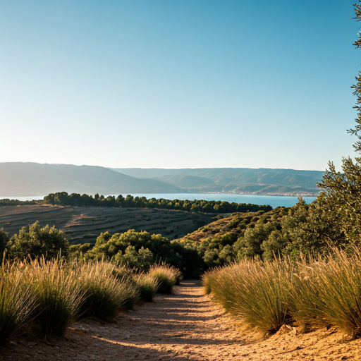
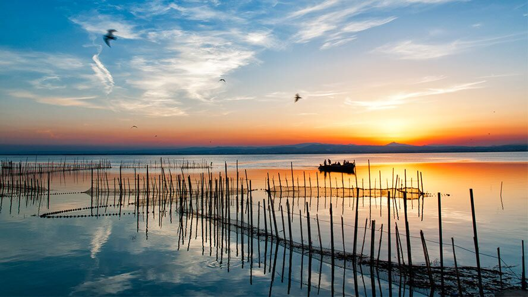
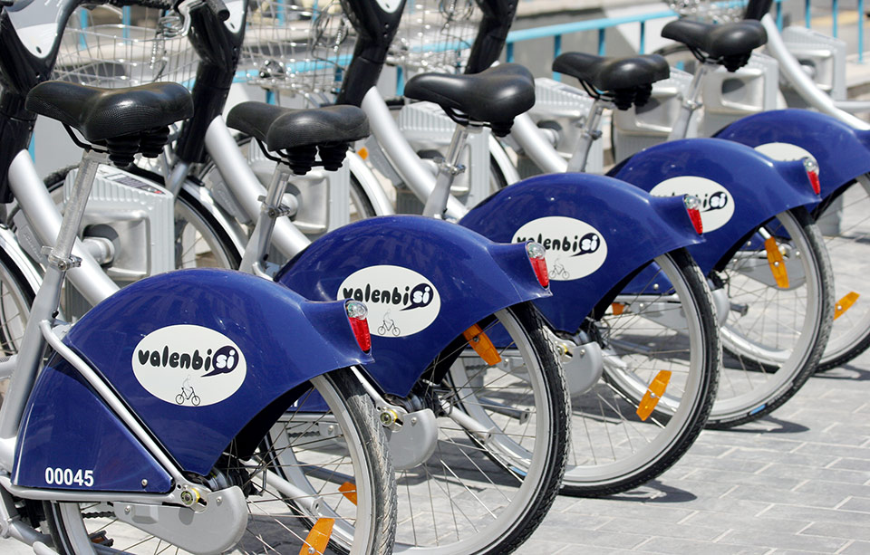
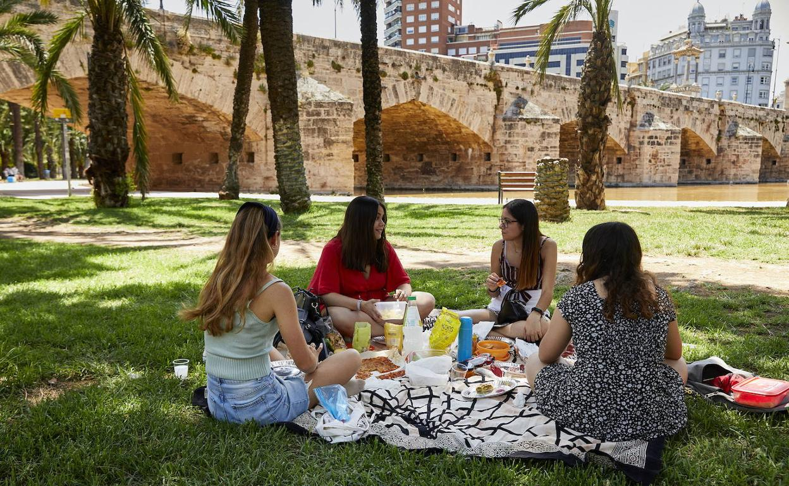

Nature in Valencia
Explore Albufera and Turia Garden with sustainable travel options. Protect the green heart of the Mediterranean.
Sustainable Natural Wonders
Maravillas Naturales Sostenibles

Albufera Natural Park
co2 Zero CarbonA freshwater lagoon and estuary where the traditional rice culture meets diverse birdlife.

Turia Garden
pedal_bike Active Travel9km of continuous green space in a former riverbed, connecting the Bioparc to the City of Arts.
Eco-Friendly Activities

Bird Watching
Observación de Aves
Starting from €15

Traditional 'Albuferencs'
Paseos en Barca Tradicional
Zero Carbon Electric or Sail

Eco Bike Rentals
Alquiler de Bicicletas
Daily passes available

Local Eco-Picnics
Picnic con Productos Locales
Plastic-Free Packaging
How to Get There Sustainably
Reducing your carbon footprint starts with the journey. We recommend using the dedicated bike lanes or our award-winning hybrid bus network.
Download the EMT app for real-time schedules to El Palmar and Albufera.
Access interactive maps of safe bike paths throughout the city.